iptables
Схема движение трафика
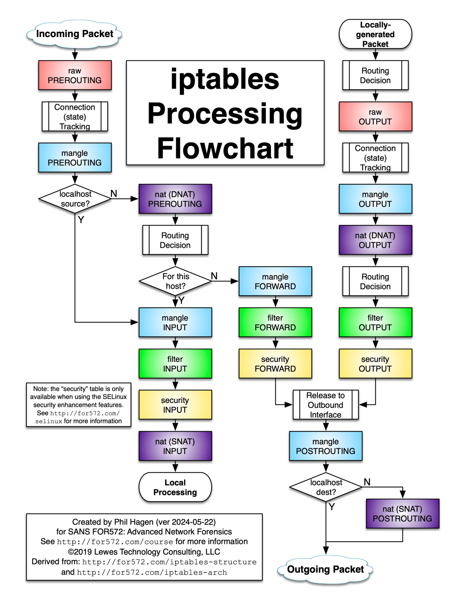
Цепочки
- INPUT. Входящий трафик.
- OUTPUT. Исходящий трафик.
- FORWARD. Транзитный трафик.
- PREROUTING. Обычно используется для проброса портов.
- POSTROUTING. Обычно используется для NAT.
Таблицы
- raw. Обычно используется для отключения отслеживания состояния (connection tracking), т.к. эта таблица встречается на пути трафика раньше остальных (см. схему движения).
- nat. Преобразования NAT.
- mangle. Позволяет изменять параметры в заголовке пакета, например, TTL, DSCP (QoS).
- filter. Фильтрация пакетов.
- security. Используется на системах с SELinux.
В каждой таблице есть свой набор цепочек. См. схему движения.
Общий порядок обработки правил
Таблица mangle намеренно отсутствует, т.к. она на пути продвижения встречается много раз и это расположение зависит от того, куда направляется трафик.
- raw
- conntrack
- nat (DNAT)
- маршрутизация
- filter
- security
- nat (SNAT)
Состояния conntrack
Conntrack (connection tracker) позволяет повысить безопасность за счет более простого набора правил и их более читаемого формата, а также является важной частью работы NAT.
- New. Новое соединение. Устройство встретило только одно сообщение из потока. Например, отправка ICMP-запроса или первого сообщения из TCP-соединения.
- Established. Установленное соединение. Устройство встретило два сообщения из потока. Например, ответ на ICMP-запрос или второе TCP-сообщение из процесса рукопожатия.
- Related. Связанное с потоком сообщение. Например, используется в FTP, т.к. там используется два порта: служебный и для передачи данных.
- Invalid. Недопустимое состояние. Например, если соединение было закрыто, а пакеты все еще поступают.
Основные действия (targets)
- ACCEPT. Пакету разрешено пройти текущую цепочку. Пакет может быть еще отброшен позже в других цепочках.
- DROP. Пакет отбрасывается и дальше не обрабатывается.
- REJECT. Пакет отбрасывается и дальше не обрабатывается. Но в отличие от DROP, отправителю будет отправлено сообщение о том, что его пакет был отброшен.
- DNAT. Используется для подмены адреса назначения.
- SNAT. Используется для подмены адреса источника.
- LOG. Создать log-сообщение.
- MARK. Маркируется пакет в пределах текущего устройства. Используется для упрощения написания правил. Действие доступно только в таблице mangle.
- CONNMARK. Аналогия MARK, только работает в рамках соединения, а не отдельного пакета.
- MASQUERADE. Частный случай SNAT. Имеет смысл использовать тогда, когда интерфейс получает адрес динамически. Если статически, то лучше использовать SNAT.
- REDIRECT. Выполняет перенаправление пакетов на другой порт той же самой машины. Обычно используется при проксировании.
Синтаксис iptables
iptables [-t таблица] <действие с правилом> <цепочка> <параметры>
Основные действия с правилом:
-A (добавить правило в цепочку)
-D (удалить правило)
-I (вставить правило с нужным номером)
-L (вывести все правила в текущей цепочке)
-S (вывести все правила)
-F (очистить все правила)
-N (создать цепочку)
-X (удалить цепочку)
-P (установить действие по умолчанию)
Основные параметры:
-p (протокол: tcp, udp, icmp, …)
-s (адрес отправителя)
-d (адрес получателя)
-i (входящий интерфейс)
-o (исходящий интерфейс)
-j (выбрать действие, если правило подошло)
Если таблицу не указать с помощью ключа -t, то по умолчанию выбирается таблица filter.
Примеры базовых команд
iptables -L- просмотр правил; часто используется с дополнительными ключами-vn, а также можно указать--line-numbers, чтобы вывести номера строк.iptables -L INPUT- просмотр правил конкретной цепочки INPUT (по умолчанию FORWARD).iptables -F- очистить правила.iptables -F INPUT- очистить правила конкретной цепочки INPUT (по умолчанию FORWARD).iptables -P OUTPUT ACCEPT- разрешить по умолчанию исходящие пакеты.iptables -P INPUT DROP- запретить по умолчанию входящие пакеты.iptables -A INPUT -s 10.0.0.1 -j ACCEPT- разрешить входящий трафик от устройства с указанным адресом.iptables -A OUTPUT -s 192.168.8.0/24 -j DROP- запретить отправлять пакеты в указанную сеть.iptables -A INPUT -p tcp --dport ssh -s 1.1.1.1 -j ACCEPT- разрешить подключаться по протоколу tcp на порт 22 (ssh) с устройства с указанным адресом.iptables -I INPUT 2 -j ACCEPT- вставить разрешающее правило на позицию 2 в списке.iptables -I FORWARD -d 8.8.8.8 -j DROP- вставить правило в начало списка (по умолчанию, если не указан номер), запрещающее пересылать пакеты по адресу 8.8.8.8.iptables -t nat -A POSTROUTING -s 192.168.0.0/24 -o eth0 -j SNAT --to-source 10.0.0.1- преобразовывать адреса источника пакета на адрес 10.0.0.1, если пакет из сети 192.168.0.0/24 собирается выходить из интерфейса eth0.iptables -t nat -A POSTROUTING -o eth0 -s 192.168.0.0/24 -j MASQUERADE- частный случай SNAT, в котором адрес, на который выполняется подмена, вычисляется автоматически, основываясь на параметре-o eth0.iptables -t nat -A PREROUTING -i eth0 -p tcp --dport 80 -j DNAT --to-destination 192.168.0.1:8080- подменять адрес получателя в пакетах, приходящих на интерфейс eth0 и порт получателя 80 на указанные адрес и порт.
Сохранение и восстановление правил
Если не сохранить, после перезагрузки правила пропадут.
iptables-save > filename
iptables-restore < filename
Автоматически сохранять при выключении интерфейса, и восстанавливать после его включения:
auto eth0
iface eth0 inet static
address 10.0.0.2/16
post-up iptables -t nat -A POSTROUTING -o wan0 -j MASQUERADE
post-up ip route add default via 10.0.0.1
Или более удобный и короткий вариант:
auto eth0
iface eth0 inet dhcp
post-up iptables-restore < /etc/iptables.rules
post-down iptables-save > /etc/iptables.rules
Пример с цепочками INPUT, OUTPUT
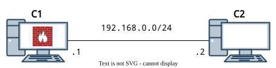
C1$ iptables -P INPUT DROP
C1$ iptables -P OUTPUT DROP
C1$ ping 192.168.0.2 ---> ❌ запрос
C2$ ping 192.168.0.1 ---> ❌ запрос
C1$ iptables -A OUTPUT -p icmp -j ACCEPT
C1$ ping 192.168.0.2 ---> ✅ запрос, ❌ ответ
C2$ ping 192.168.0.1 ---> ❌ запрос
C1$ iptables -A INPUT -p icmp -j ACCEPT
C1$ ping 192.168.0.2 ---> ✅ запрос, ✅ ответ
C2$ ping 192.168.0.1 ---> ✅ запрос, ✅ ответ
В данном примере по итогу проблема в том, что C2 может пинговать C1 в любой момент.
Пример с состоянием NEW
C1$ iptables -P INPUT DROP
C1$ iptables -P OUTPUT DROP
C1$ iptables -A OUTPUT -p icmp -j ACCEPT
C1$ iptables -A INPUT -p icmp -m conntrack --ctstate NEW -j ACCEPT
C1$ ping 192.168.0.2 ---> ✅ запрос, ❌ ответ
C2$ ping 192.168.0.1 ---> ✅ запрос, ✅ ответ, но только для первой пары сообщений
В данном примере по итогу проблема в том, что C2 может пинговать C1 в любой момент, но только один ICMP-запрос пройдет в течение небольшого времени.
Пример с состоянием ESTABLISHED
C1$ iptables -P INPUT DROP
C1$ iptables -P OUTPUT DROP
C1$ iptables -A OUTPUT -p icmp -j ACCEPT
C1$ iptables -A INPUT -p icmp -m conntrack --ctstate ESTABLISHED -j ACCEPT
C1$ ping 192.168.0.2 ---> ✅ запрос, ✅ ответ
C2$ ping 192.168.0.1 ---> ❌ запрос
В данном примере получено то, что и требовалось. По своей инициативе C2 не сможет отправить сообщение на C1.
Пример с состоянием RELATED
C1$ iptables -P INPUT DROP
C1$ iptables -P OUTPUT DROP
C1$ iptables -A OUTPUT -p tcp -j ACCEPT
C1$ iptables -A INPUT -p tcp -m conntrack --ctstate ESTABLISHED -j ACCEPT
C2$ nc -l 8080
C1$ nc 192.168.0.2 8080 ---> ✅ запрос, ✅ ответ
C1$ nc 192.168.0.2 8081 ---> ✅ запрос, ❌ ответ с ошибкой C1 не получит (C2 не слушает этот порт)
C1$ iptables -A INPUT -p tcp -m conntrack --ctstate RELATED -j ACCEPT
C1$ nc 192.168.0.2 8081 ---> ✅ запрос, ✅ ответ с ошибкой C1 получит (C2 не слушает этот порт)
В данном примере получено то, что и требовалось. По своей инициативе C2 не сможет отправить сообщение на C1.
Пример с действием MARK
iptables -t mangle -A PREROUTING -p icmp -j MARK --set-mark 0x100
iptables -t mangle -A INPUT -m mark --mark 0x100 -j DROP
Пример с действием MARK и таблицей маршрутизации
iptables -t mangle -A PREROUTING -s 192.168.1.0/24 -j MARK --set-mark 0x1
ip route add default via 10.0.0.1 dev eth0 table 100
ip rule add fwmark 0x1 lookup 102
Пример с действием NOTRACK
iptables -t raw -A PREROUTING -j NOTRACK
iptables -t raw -A OUTPUT -j NOTRACK
Еще примеры в картинках
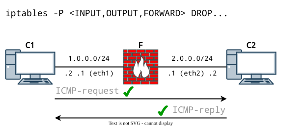
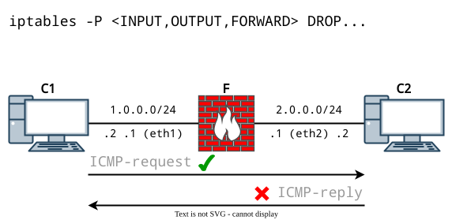
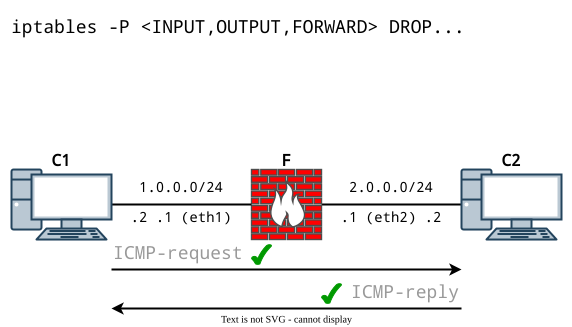
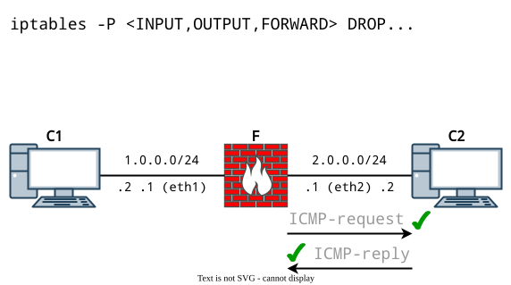
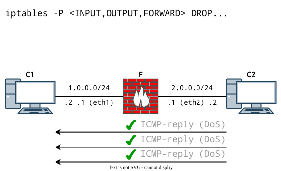
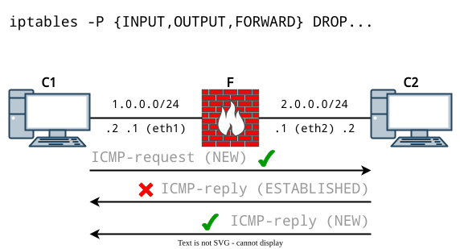
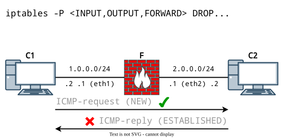
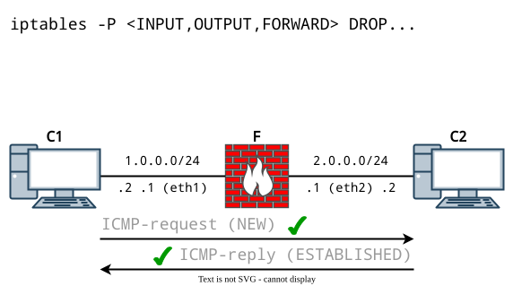
🧠 Самостоятельное изучение
- firewalld
- nftables
- OpenNet iptables
- connmark
- fwbuilder - "GUI" для iptables.
- Установка и базовая настройка pfsense, OPNsense.
🧰 Лабораторная работа
Ознакомиться перед выполнением любой лабораторной работы (список раскрывается)
- Вместо ❔ или
xнужно подставить свой номер по журналу - Выполнять задание без "отмашки" не стоит ⛔, т.к. задание здесь может существовать более актуальная версия
- У каждой работы есть срок сдачи 📅, который озвучивается на занятии, после которого работа не может быть защищена на максимальный балл 📉
- Дополнительные задания 📚 не являются обязательными, но по результатам сдачи лабораторной работы может быть выдано одно или несколько из них. Также дополнительное задание может быть сформулировано устно
- Для каждой лабораторной работы должен быть отчет 📝 с описанием выполнения ваших действий, оформление должно соответствовать требованиям (см. на сайте учебного заведения)
- Нужно уметь ответить на вопросы ❓ по теме, контрольные вопросы и другие связанные вопросы
- Примеры могут быть выполнены по желанию, а также выданы в качестве дополнительного задания с изменениями или без в случае неуспешной 😢 защиты основной работы
- Иногда в работах встречаются задания по IPv4 и IPv6 одновременно 🔗. Это считается как одна работа. Допускается сдача работы только с IPv4 или только с IPv6, но максимальный балл в таком случае получить невозможно
🌐 Схема
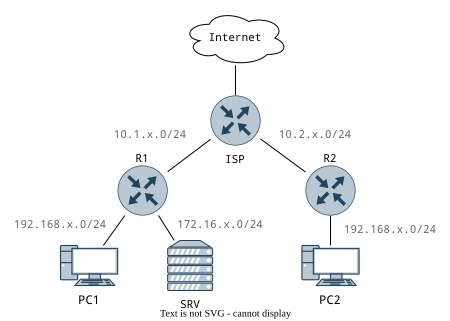
✔️ Условия
- Все устройства - Debian 12.
- В качестве firewall использовать
iptables. - Имена устройств задать согласно схеме.
- Использовать произвольные адреса, учитывая сети на схеме.
- ISP со стороны Internet получает адрес с помощью DHCP. Остальные IP-адреса на всех устройствах задаются статически.
- Все устройства должны иметь доступ в Internet.
- На SRV установить любой веб-сервер, например, Apache2 или nginx. На стандартной "заглушке" (index.html) указать свою фамилию и номер по журналу. Веб-сервер должен "слушать" порт
8000 + х. - Можно использовать только маршрут по умолчанию там, где нужно. Необходимо активировать маршрутизацию.
- По умолчанию все маршрутизаторы должны блокировать любой транзитный, входящий и исходящий трафик.
- Использовать NAT (
MASQUERADEиSNAT), где нужно. - Доступ к SRV организовать с помощью
DNATна R1. Обращение к веб-серверу должно осуществляться по адресуhttp://10.1.x.100:80, а обращаться по его прямому адресу нельзя.
📚 Дополнительные задания
- ⭐ Повторить ЛР, используя в качестве firewall
nftables. - Повторить ЛР, используя в качестве firewall
firewalld.
©️ Оформление, изложение, медиаконтент. И. Попов, 2020-2025